Hello Guys!!
Welcome to my Page...
Hope you have fun!!
About Me
𝙸 𝚠𝚊𝚜 𝚋𝚘𝚛𝚗 𝚊𝚝 𝚄𝚕𝚖, 𝚒𝚗 𝚆ü𝚛𝚝𝚝𝚎𝚖𝚋𝚎𝚛𝚐, 𝙶𝚎𝚛𝚖𝚊𝚗𝚢, 𝚘𝚗 𝙼𝚊𝚛𝚌𝚑 𝟷𝟺, 𝟷𝟾𝟽𝟿. 𝚂𝚒𝚡 𝚠𝚎𝚎𝚔𝚜 𝚕𝚊𝚝𝚎𝚛 𝚝𝚑𝚎 𝚏𝚊𝚖𝚒𝚕𝚢 𝚖𝚘𝚟𝚎𝚍 𝚝𝚘 𝙼𝚞𝚗𝚒𝚌𝚑, 𝚠𝚑𝚎𝚛𝚎 𝚑𝚎 𝚕𝚊𝚝𝚎𝚛 𝚘𝚗 𝚋𝚎𝚐𝚊𝚗 𝚑𝚒𝚜 𝚜𝚌𝚑𝚘𝚘𝚕𝚒𝚗𝚐 𝚊𝚝 𝚝𝚑𝚎 𝙻𝚞𝚒𝚝𝚙𝚘𝚕𝚍 𝙶𝚢𝚖𝚗𝚊𝚜𝚒𝚞𝚖. 𝙻𝚊𝚝𝚎𝚛, 𝚝𝚑𝚎𝚢 𝚖𝚘𝚟𝚎𝚍 𝚝𝚘 𝙸𝚝𝚊𝚕𝚢 𝚊𝚗𝚍 𝙰𝚕𝚋𝚎𝚛𝚝 𝚌𝚘𝚗𝚝𝚒𝚗𝚞𝚎𝚍 𝚑𝚒𝚜 𝚎𝚍𝚞𝚌𝚊𝚝𝚒𝚘𝚗 𝚊𝚝 𝙰𝚊𝚛𝚊𝚞, 𝚂𝚠𝚒𝚝𝚣𝚎𝚛𝚕𝚊𝚗𝚍 𝚊𝚗𝚍 𝚒𝚗 𝟷𝟾𝟿𝟼 𝚑𝚎 𝚎𝚗𝚝𝚎𝚛𝚎𝚍 𝚝𝚑𝚎 𝚂𝚠𝚒𝚜𝚜 𝙵𝚎𝚍𝚎𝚛𝚊𝚕 𝙿𝚘𝚕𝚢𝚝𝚎𝚌𝚑𝚗𝚒𝚌 𝚂𝚌𝚑𝚘𝚘𝚕 𝚒𝚗 𝚉𝚞𝚛𝚒𝚌𝚑 𝚝𝚘 𝚋𝚎 𝚝𝚛𝚊𝚒𝚗𝚎𝚍 𝚊𝚜 𝚊 𝚝𝚎𝚊𝚌𝚑𝚎𝚛 𝚒𝚗 𝚙𝚑𝚢𝚜𝚒𝚌𝚜 𝚊𝚗𝚍 𝚖𝚊𝚝𝚑𝚎𝚖𝚊𝚝𝚒𝚌𝚜. 𝙸𝚗 𝟷𝟿𝟶𝟷, 𝚝𝚑𝚎 𝚢𝚎𝚊𝚛 𝚑𝚎 𝚐𝚊𝚒𝚗𝚎𝚍 𝚑𝚒𝚜 𝚍𝚒𝚙𝚕𝚘𝚖𝚊, 𝚑𝚎 𝚊𝚌𝚚𝚞𝚒𝚛𝚎𝚍 𝚂𝚠𝚒𝚜𝚜 𝚌𝚒𝚝𝚒𝚣𝚎𝚗𝚜𝚑𝚒𝚙 𝚊𝚗𝚍, 𝚊𝚜 𝚑𝚎 𝚠𝚊𝚜 𝚞𝚗𝚊𝚋𝚕𝚎 𝚝𝚘 𝚏𝚒𝚗𝚍 𝚊 𝚝𝚎𝚊𝚌𝚑𝚒𝚗𝚐 𝚙𝚘𝚜𝚝, 𝚑𝚎 𝚊𝚌𝚌𝚎𝚙𝚝𝚎𝚍 𝚊 𝚙𝚘𝚜𝚒𝚝𝚒𝚘𝚗 𝚊𝚜 𝚝𝚎𝚌𝚑𝚗𝚒𝚌𝚊𝚕 𝚊𝚜𝚜𝚒𝚜𝚝𝚊𝚗𝚝 𝚒𝚗 𝚝𝚑𝚎 𝚂𝚠𝚒𝚜𝚜 𝙿𝚊𝚝𝚎𝚗𝚝 𝙾𝚏𝚏𝚒𝚌𝚎. 𝙸𝚗 𝟷𝟿𝟶𝟻 𝚑𝚎 𝚘𝚋𝚝𝚊𝚒𝚗𝚎𝚍 𝚑𝚒𝚜 𝚍𝚘𝚌𝚝𝚘𝚛’𝚜 𝚍𝚎𝚐𝚛𝚎𝚎.
- 𝙱𝚘𝚛𝚗: 𝙼𝚊𝚛𝚌𝚑 𝟷𝟺, 𝟷𝟾𝟽𝟿, 𝚄𝚕𝚖, 𝙶𝚎𝚛𝚖𝚊𝚗𝚢
- 𝙳𝚒𝚎𝚍: 𝙰𝚙𝚛𝚒𝚕 𝟷𝟾, 𝟷𝟿𝟻𝟻, 𝙿𝚛𝚒𝚗𝚌𝚎𝚝𝚘𝚗, 𝙽𝙹
- 𝙴𝚍𝚞𝚌𝚊𝚝𝚒𝚘𝚗: 𝚄𝚗𝚒𝚟𝚎𝚛𝚜𝚒𝚝𝚢 𝚘𝚏 𝚉𝚞𝚛𝚒𝚌𝚑 (𝟷𝟿𝟶𝟻), 𝙴𝚃𝙷 𝚉ü𝚛𝚒𝚌𝚑 (𝟷𝟾𝟿𝟽–𝟷𝟿𝟶𝟶)
- 𝙲𝚑𝚒𝚕𝚍𝚛𝚎𝚗: 𝙴𝚍𝚞𝚊𝚛𝚍 𝙴𝚒𝚗𝚜𝚝𝚎𝚒𝚗, 𝙷𝚊𝚗𝚜 𝙰𝚕𝚋𝚎𝚛𝚝 𝙴𝚒𝚗𝚜𝚝𝚎𝚒𝚗, 𝙻𝚒𝚎𝚜𝚎𝚛𝚕 𝙴𝚒𝚗𝚜𝚝𝚎𝚒𝚗
- 𝚂𝚙𝚘𝚞𝚜𝚎: 𝙴𝚕𝚜𝚊 𝙴𝚒𝚗𝚜𝚝𝚎𝚒𝚗 (𝚖. 𝟷𝟿𝟷𝟿–𝟷𝟿𝟹𝟼), 𝙼𝚒𝚕𝚎𝚟𝚊 𝙼𝚊𝚛𝚒ć (𝚖. 𝟷𝟿𝟶𝟹–𝟷𝟿𝟷𝟿)
- 𝙰𝚠𝚊𝚛𝚍𝚜: 𝙽𝚘𝚋𝚎𝚕 𝙿𝚛𝚒𝚣𝚎 𝚒𝚗 𝙿𝚑𝚢𝚜𝚒𝚌𝚜, 𝙼𝙾𝚁𝙴
- 𝙷𝚎𝚒𝚐𝚑𝚝: 𝟻′ 𝟽″

Publications
𝙷𝚎𝚛𝚎 𝚊𝚛𝚎 𝚏𝚎𝚠 𝚘𝚏 𝚖𝚢 𝚙𝚞𝚋𝚕𝚒𝚌𝚊𝚝𝚒𝚘𝚗𝚜 𝚠𝚑𝚒𝚌𝚑 𝚖𝚒𝚐𝚑𝚝 𝚋𝚎 𝚊 𝚑𝚎𝚕𝚙 𝚘𝚏 𝚢𝚘𝚞
𝚅𝚘𝚕𝚞𝚖𝚎 𝟷: 𝚃𝚑𝚎 𝙴𝚊𝚛𝚕𝚢 𝚈𝚎𝚊𝚛𝚜, 𝟷𝟾𝟽𝟿-𝟷𝟿𝟶𝟸 ||
𝙲𝚕𝚒𝚌𝚔 𝚑𝚎𝚛𝚎
𝚅𝚘𝚕𝚞𝚖𝚎 𝟸: 𝚃𝚑𝚎 𝚂𝚠𝚒𝚜𝚜 𝚈𝚎𝚊𝚛𝚜: 𝚆𝚛𝚒𝚝𝚒𝚗𝚐𝚜, 𝟷𝟿𝟶𝟶-𝟷𝟿𝟶𝟿 ||
𝙲𝚕𝚒𝚌𝚔 𝚑𝚎𝚛𝚎
𝚅𝚘𝚕𝚞𝚖𝚎 𝟹: 𝚃𝚑𝚎 𝚂𝚠𝚒𝚜𝚜 𝚈𝚎𝚊𝚛𝚜: 𝚆𝚛𝚒𝚝𝚒𝚗𝚐𝚜 𝟷𝟿𝟶𝟿-𝟷𝟿𝟷𝟷 ||
𝙲𝚕𝚒𝚌𝚔 𝚑𝚎𝚛𝚎
𝚅𝚘𝚕𝚞𝚖𝚎 𝟺: 𝚃𝚑𝚎 𝚂𝚠𝚒𝚜𝚜 𝚈𝚎𝚊𝚛𝚜: 𝚆𝚛𝚒𝚝𝚒𝚗𝚐𝚜 𝟷𝟿𝟷𝟸-𝟷𝟿𝟷𝟺 ||
𝙲𝚕𝚒𝚌𝚔 𝚑𝚎𝚛𝚎
𝚅𝚘𝚕𝚞𝚖𝚎 𝟻: 𝚃𝚑𝚎 𝚂𝚠𝚒𝚜𝚜 𝚈𝚎𝚊𝚛𝚜: 𝙲𝚘𝚛𝚛𝚎𝚜𝚙𝚘𝚗𝚍𝚎𝚗𝚌𝚎, 𝟷𝟿𝟶𝟸-𝟷𝟿𝟷𝟺 ||
𝙲𝚕𝚒𝚌𝚔 𝚑𝚎𝚛𝚎
𝚅𝚘𝚕𝚞𝚖𝚎 𝟼: 𝚃𝚑𝚎 𝙱𝚎𝚛𝚕𝚒𝚗 𝚈𝚎𝚊𝚛𝚜: 𝚆𝚛𝚒𝚝𝚒𝚗𝚐𝚜, 𝟷𝟿𝟷𝟺-𝟷𝟿𝟷𝟽 ||
𝙲𝚕𝚒𝚌𝚔 𝚑𝚎𝚛𝚎
𝚅𝚘𝚕𝚞𝚖𝚎 𝟽: 𝚃𝚑𝚎 𝙱𝚎𝚛𝚕𝚒𝚗 𝚈𝚎𝚊𝚛𝚜: 𝚆𝚛𝚒𝚝𝚒𝚗𝚐𝚜, 𝟷𝟿𝟷𝟾-𝟷𝟿𝟸𝟷 ||
𝙲𝚕𝚒𝚌𝚔 𝚑𝚎𝚛𝚎
𝚅𝚘𝚕𝚞𝚖𝚎 𝟾, 𝙿𝚊𝚛𝚝 𝙰: 𝚃𝚑𝚎 𝙱𝚎𝚛𝚕𝚒𝚗 𝚈𝚎𝚊𝚛𝚜: 𝙲𝚘𝚛𝚛𝚎𝚜𝚙𝚘𝚗𝚍𝚎𝚗𝚌𝚎 𝟷𝟿𝟷𝟺-𝟷𝟿𝟷𝟽 ||
𝙲𝚕𝚒𝚌𝚔 𝚑𝚎𝚛𝚎
Contributions
𝙷𝚎𝚛𝚎 𝚊𝚛𝚎 𝚜𝚘𝚖𝚎 𝚘𝚏 𝚖𝚢 𝚏𝚊𝚖𝚘𝚞𝚜 𝚌𝚘𝚗𝚝𝚛𝚒𝚋𝚞𝚝𝚒𝚘𝚗𝚜 𝚠𝚑𝚒𝚌𝚑 𝚠𝚎𝚛𝚎 𝚛𝚎𝚌𝚘𝚐𝚗𝚒𝚣𝚎𝚍 𝚊𝚌𝚛𝚘𝚜𝚜 𝚝𝚑𝚎 𝚠𝚘𝚛𝚕𝚍 𝚊𝚗𝚍 𝚒𝚗 𝟷𝟿𝟸𝟷, 𝙸 𝚠𝚘𝚗 𝚝𝚑𝚎 𝚙𝚛𝚎𝚜𝚝𝚒𝚐𝚒𝚘𝚞𝚜 𝙽𝚘𝚋𝚎𝚕 𝙿𝚛𝚒𝚣𝚎 𝚏𝚘𝚛 𝙿𝚑𝚢𝚜𝚒𝚌𝚜 𝚏𝚘𝚛 𝚝𝚑𝚎 𝚜𝚒𝚐𝚗𝚒𝚏𝚒𝚌𝚊𝚗𝚝 𝚠𝚘𝚛𝚔 𝚘𝚗 𝚝𝚑𝚎 𝚙𝚑𝚘𝚝𝚘𝚎𝚕𝚎𝚌𝚝𝚛𝚒𝚌 𝚎𝚏𝚏𝚎𝚌𝚝.
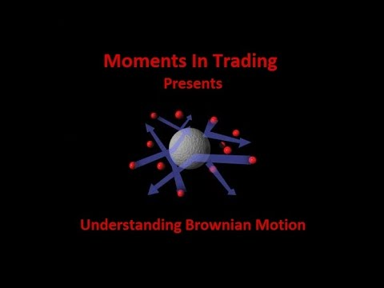
𝚃𝚑𝚎 𝙱𝚛𝚘𝚠𝚗𝚒𝚊𝚗 𝚖𝚘𝚟𝚎𝚖𝚎𝚗𝚝 𝚒𝚜 𝚘𝚗𝚎 𝚘𝚏 𝚝𝚑𝚎 𝚜𝚒𝚐𝚗𝚒𝚏𝚒𝚌𝚊𝚗𝚝 𝚌𝚘𝚗𝚝𝚛𝚒𝚋𝚞𝚝𝚒𝚘𝚗𝚜. 𝚆𝚑𝚒𝚕𝚎 𝚜𝚝𝚞𝚍𝚢𝚒𝚗𝚐 𝚝𝚑𝚎 𝚖𝚘𝚕𝚎𝚌𝚞𝚕𝚊𝚛 𝚝𝚑𝚎𝚘𝚛𝚢 𝚘𝚏 𝚕𝚒𝚚𝚞𝚒𝚍𝚜, 𝚑𝚎 𝚝𝚛𝚒𝚎𝚍 𝚝𝚘 𝚎𝚡𝚙𝚕𝚊𝚒𝚗 𝚝𝚑𝚎 𝚖𝚘𝚝𝚒𝚘𝚗 𝚘𝚏 𝚙𝚊𝚛𝚝𝚒𝚌𝚕𝚎𝚜 𝚝𝚑𝚛𝚘𝚞𝚐𝚑 𝙱𝚛𝚘𝚠𝚗𝚒𝚊𝚗 𝚖𝚘𝚝𝚒𝚘𝚗.
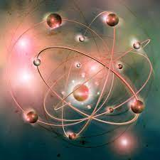
𝙴𝚒𝚗𝚜𝚝𝚎𝚒𝚗 𝚠𝚊𝚜 𝚝𝚑𝚎 𝚔𝚎𝚢 𝚙𝚎𝚛𝚜𝚘𝚗 𝚋𝚎𝚑𝚒𝚗𝚍 𝚝𝚑𝚎 𝚚𝚞𝚊𝚗𝚝𝚞𝚖 𝚝𝚑𝚎𝚘𝚛𝚢 𝚘𝚏 𝚕𝚒𝚐𝚑𝚝. 𝙷𝚎 𝚙𝚛𝚘𝚙𝚘𝚜𝚎𝚍 𝚊𝚗𝚍 𝚎𝚡𝚙𝚕𝚊𝚒𝚗𝚎𝚍 𝚝𝚑𝚊𝚝 𝚕𝚒𝚐𝚑𝚝 𝚌𝚘𝚗𝚜𝚒𝚜𝚝𝚜 𝚘𝚏 𝚙𝚊𝚌𝚔𝚎𝚝𝚜 𝚘𝚏 𝚎𝚗𝚎𝚛𝚐𝚢 𝚔𝚗𝚘𝚠𝚗 𝚊𝚜 𝚙𝚑𝚘𝚝𝚘𝚗𝚜 𝚒𝚗 𝟷𝟿𝟶𝟻
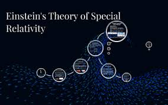
𝙸𝚝 𝚒𝚜 𝚊 𝚝𝚑𝚎𝚘𝚛𝚢 𝚛𝚎𝚐𝚊𝚛𝚍𝚒𝚗𝚐 𝚝𝚑𝚎 𝚛𝚎𝚕𝚊𝚝𝚒𝚘𝚗𝚜𝚑𝚒𝚙 𝚋𝚎𝚝𝚠𝚎𝚎𝚗 𝚝𝚒𝚖𝚎 𝚊𝚗𝚍 𝚜𝚙𝚊𝚌𝚎.𝚃𝚑𝚒𝚜 𝚒𝚜 𝚘𝚛𝚒𝚐𝚒𝚗 𝚘𝚏 𝚝𝚑𝚎 𝚖𝚘𝚜𝚝 𝚏𝚊𝚖𝚘𝚞𝚜 𝚎𝚚𝚞𝚊𝚝𝚒𝚘𝚗 𝙴=𝚖𝚌𝟸
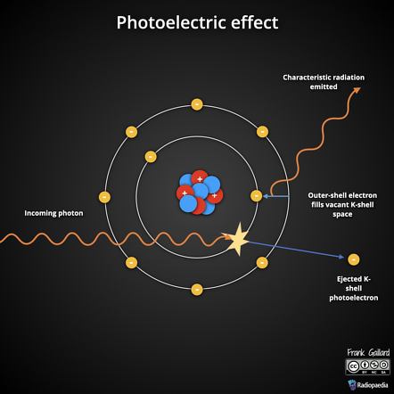
𝙸𝚝 𝚒𝚜 𝚝𝚑𝚎 𝚙𝚑𝚎𝚗𝚘𝚖𝚎𝚗𝚘𝚗 𝚝𝚑𝚊𝚝 𝚘𝚌𝚌𝚞𝚛𝚜 𝚠𝚑𝚎𝚗 𝚝𝚑𝚎 𝚖𝚊𝚝𝚎𝚛𝚒𝚊𝚕 𝚊𝚋𝚜𝚘𝚛𝚋𝚜 𝚎𝚕𝚎𝚌𝚝𝚛𝚘𝚖𝚊𝚐𝚗𝚎𝚝𝚒𝚌 𝚛𝚊𝚍𝚒𝚊𝚝𝚒𝚘𝚗𝚜 𝚊𝚗𝚍 𝚎𝚕𝚎𝚌𝚝𝚛𝚒𝚌𝚊𝚕𝚕𝚢 𝚌𝚑𝚊𝚛𝚐𝚎𝚍 𝚙𝚊𝚛𝚝𝚒𝚌𝚕𝚎𝚜 𝚊𝚛𝚎 𝚛𝚎𝚕𝚎𝚊𝚜𝚎𝚍 𝚏𝚛𝚘𝚖 𝚘𝚛 𝚠𝚒𝚝𝚑𝚒𝚗 𝚒𝚝
Hobbies
𝙷𝚎𝚛𝚎 𝚊𝚛𝚎 𝚝𝚑𝚎 𝚕𝚒𝚜𝚝 𝚘𝚏 𝚖𝚢 𝚑𝚘𝚋𝚋𝚒𝚎𝚜 𝚝𝚑𝚊𝚝 𝙸 𝚙𝚛𝚎𝚏𝚎𝚛 𝚝𝚘 𝚍𝚘. 𝙸 𝚑𝚘𝚙𝚎 𝚢𝚘𝚞 𝚖𝚒𝚐𝚑𝚝 𝚑𝚊𝚟𝚎 𝚜𝚘𝚖𝚎 𝚘𝚏 𝚝𝚑𝚎𝚖 𝚝𝚘𝚘
- 𝚂𝚊𝚒𝚕𝚒𝚗𝚐
- 𝚁𝚎𝚊𝚍𝚒𝚗𝚐 𝚋𝚘𝚘𝚔𝚜
- 𝙿𝚕𝚊𝚢𝚒𝚗𝚐 𝚟𝚒𝚘𝚕𝚒𝚗 𝚊𝚗𝚍 𝚙𝚒𝚊𝚗𝚘
- 𝙻𝚘𝚟𝚎 𝚝𝚘 𝚜𝚖𝚘𝚔𝚎
Blog
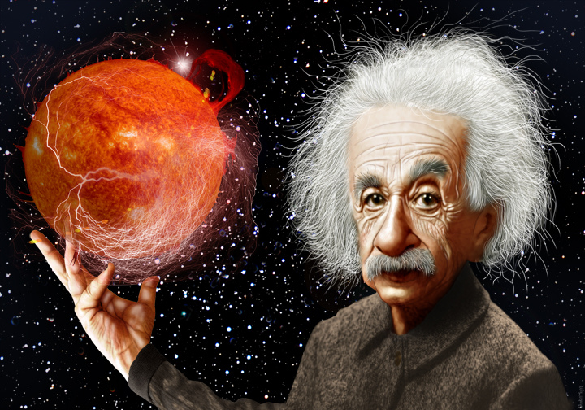
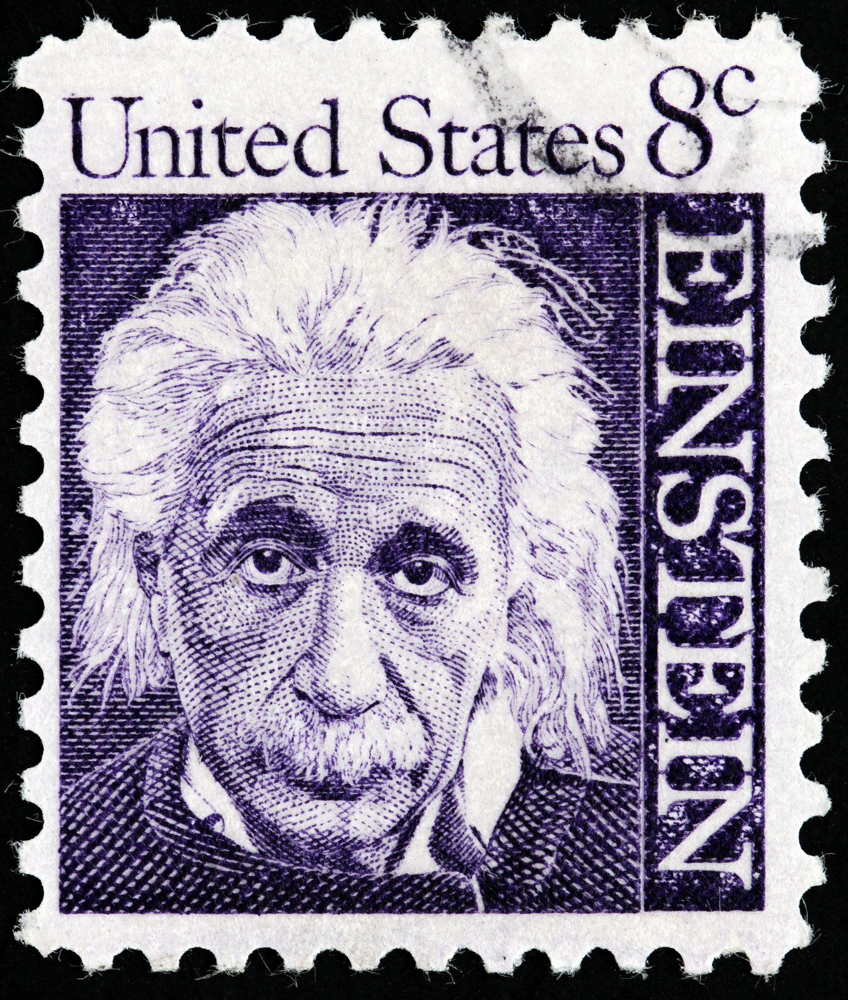
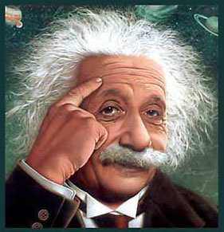
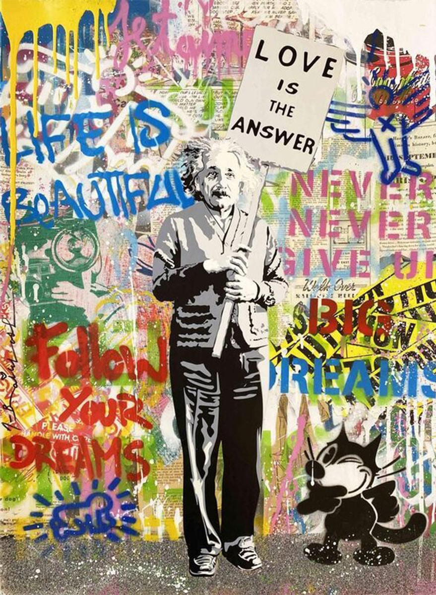
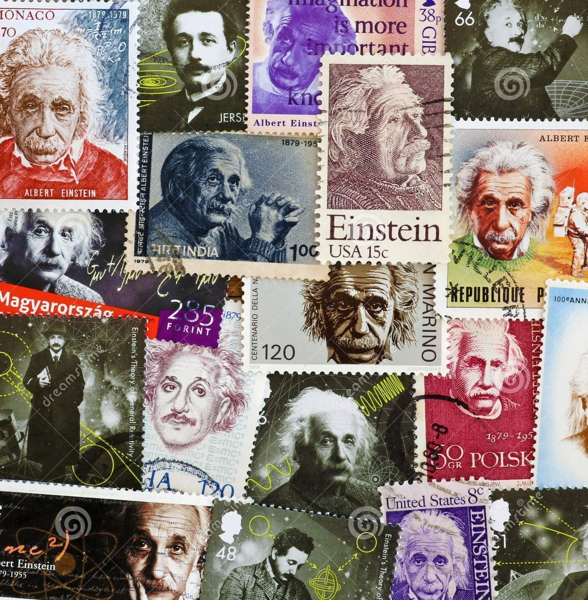
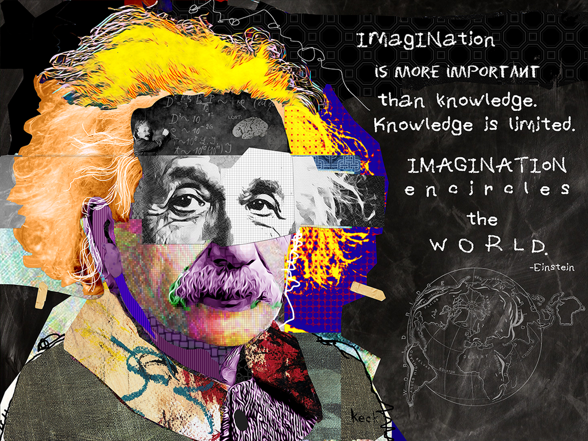
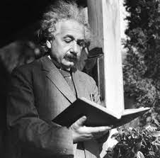
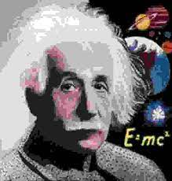